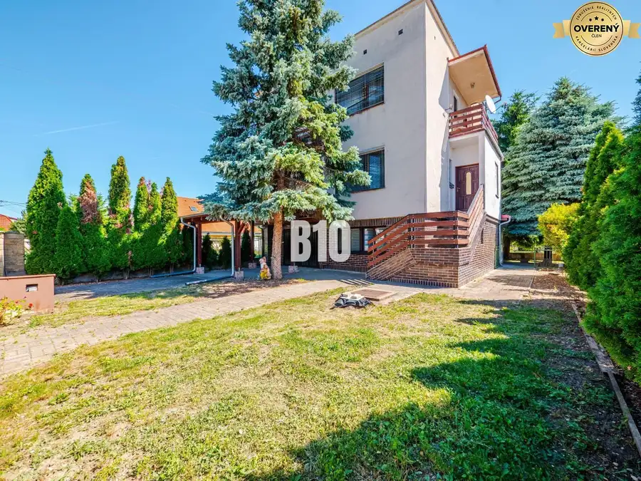

Rodinný dom s veľkým pozemkom v obľúbenej obci Kolíňany
Kolíňany
- Plocha144 m²
- Stavpôvodný
- Vlastníctvoosobné
O nehnuteľnosti
B10 Vám ponúka na predaj Rodinný dom v obci Kolíňany, ktorá patrí medzi vyhľadávané lokality v blízkosti Nitry. Dom sa nachádza na pozemku s výmerou 750 m² a je v pôvodnom stave, čo predstavuje ideálnu príležitosť pre nových majiteľov vytvoriť si bývanie presne podľa vlastných predstáv.Nehnuteľnosť disponuje veľkými izbami a ponúka dostatok priestoru pre komfortné rodinné bývanie. Vďaka pôvodnému stavu je dom vhodný na rekonštrukciu, pričom novému majiteľovi dáva možnosť zachovať si charakter stavby a zároveň ju prispôsobiť moderným požiadavkám na bývanie.Pozemok s výmerou 750 m² poskytuje dostatok miesta na záhradu, oddychovú zónu, pestovanie ovocia a zeleniny alebo realizáciu ďalších projektov podľa vašich potrieb.Obec Kolíňany ponúka príjemné a pokojné bývanie s kompletnou občianskou vybavenosťou a výbornou dostupnosťou do Nitry. V okolí nájdete školy, škôlky, obchody, služby aj možnosti na voľnočasové aktivity.Výhody nehnuteľnosti:pozemok o výmere 750 m²,pôvodný stav vhodný na rekonštrukciu,možnosť úprav podľa vlastných predstáv,pokojná lokalita v obľúbenej obci,výborná dostupnosť do Nitry.Ak hľadáte dom s potenciálom a dostatkom priestoru na realizáciu svojho vysnívaného bývania, táto ponuka je pre vás tou správnou voľbou.V prípade záujmu o obhliadku alebo bližšie informácie ma neváhajte kontaktovať na tel.č. ID: 138870Cena: 140 000€ Aj váš dom, byt alebo pozemok predáme na počkanie #pocelomslovensku
Parametre
| Rozloha pozemku | 750 m² |
|---|---|
| Zastavaná plocha | 144 m² |
| Úžitková plocha | 144 m² |
| Vlastníctvo | osobné |
| Stav | pôvodný |
| Postavené z | tehla |
| Terén | mierny svah |
| Dátum zverejnenia | 10. 7. 2026 |
Kde to je
Mohlo by Vás zaujímať

Rodinné domy10 160 000 €Priestranný 5-izbový poschodový rodinný dom na veľkom pozemku v Branči Branč 165 m² B10 Vám ponúka na predaj Rodinný dom v obci Branč.Dom je situovaný na rovinatom pozemku s výmerou 800 m². Nehnuteľnosť je v pôvodnom, zachovalom…